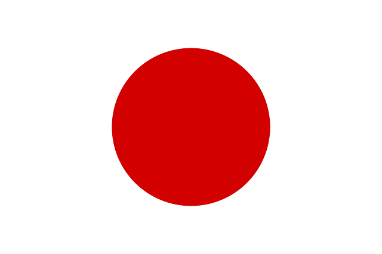

| 일본 | |
|  |
현재시간: 시차:없음 수도:도쿄 공용어:일본어 인구:약 1억 2700만 명 종교:대부분 불교와 신도 전압:100V 통화단위:엔(円)
|
계절마다의 특징이 명확하다.
봄
3월에 시작하여, 꽃이 피고 날씨가 따뜻해진다.
의복 : 가벼운 자켓이나 스웨터 등의 상의복
여름
5월에서 9월초까지로 초여름은 맑고 따뜻하다.
장마동안에는 거의 매일 비가오며, 여름내내 일본은 홋카이도를 제외하고는 기온과 습도가 높다.
의복 : 얇은 옷(단, 냉방이 완비된 장소가 많으므로 간단하게 걸칠 수 있는 옷을 준비하면 편리하다)
가을
9월부터 11월까지로 가끔 비가 오지만 날씨는 점점 건조하고 서늘하며, 강풍과 태풍을 겪기도 한다.
의복 : 가벼운 쟈켓이나 스웨터 등의 상의복
겨울
11월에서 2월까지로 일본북부는 시베리아 및 몽공의 차가운 바람이 불어오고,
남부는 기온이 온화한 편이다.
도쿄의 기온은 대체로 영하를 조금 웃도는 정도지만, 혼슈북부의 도호쿠 및 홋카이도는 매우 춥다.
홋카이도에는 많은 양의 눈이 내린다.
의복 : 코트, 스웨터 등
주요 도시의 평균 기온 및 강수량
| 겨울(12~2월) | 봄(3~5월) | |||
| 기온(C) | 강수량(mm) | 기온(C) | 강수량(mm) | |
| 삿포로 | -3.6 | 113.6 | 7.1 | 57 |
| 센다이 | 1.6 | 37 | 10.3 | 98 |
| 도쿄 | 6.1 | 52 | 14.6 | 125 |
| 나고야 | 4.5 | 48 | 14.4 | 125 |
| 오사카 | 6 | 45 | 15.1 | 104 |
| 후쿠오카 | 6.6 | 68 | 15.1 | 117 |
| 나하 | 17 | 107 | 21.4 | 166 |
| 여름(6~8월) | 가을(9~11월) | |||
| 기온(C) | 강수량(mm) | 기온(C) | 강수량(mm) | |
| 삿포로 | 20.5 | 81 | 11.8 | 109 |
| 센다이 | 22.22 | 179 | 15.2 | 122 |
| 도쿄 | 25.4 | 154 | 18.5 | 198 |
| 나고야 | 26.4 | 204 | 18.1 | 128 |
| 오사카 | 27.4 | 157 | 19 | 112 |
| 후쿠오카 | 27.2 | 278 | 19.2 | 74 |
| 나하 | 28.9 | 141 | 25.2 | 153 |
경찰 110
구급차 119
소방차 119
해상보안청 118
통화
지폐 ￥10,000 / ￥5,000 / ￥2,000 / ￥1,000
※2000엔 지폐의 유통량은 약간 적음.
동전 ￥500 / ￥100 / ￥50 / ￥10 / ￥5 / ￥1
신용카드
주요한 브랜드는 Visa・MasterCard・American Express･JCB・Diners club, 은련 등.
지방 등 일부 사용할 수 없는 장소도 있기 때문에, 본 사이트 등에서 확인하면 좋다.
환전・ATM
외화 환전소・호텔・은행・우체국 등에서 가능.
환전 가능한 편의점 ATM도 증가하고 있음.
택시
요금은 2킬로미터까지 일정 요금으로 되어 있다.
기본 요금은 도내의 경우, 730엔 정도. ※도시에 따라 다름
버스
장거리용・근거리용 모두 발달되어 있으며, 통근・통학에도 자주 이용된다.
단, 안내 방송 등은 일본어이기 때문에, 주의가 필요.
전차
공공 교통망으로서 매우 발달되어 있다.
장거리 이동의 경우에는 특급 열차 또는 신칸센을 자주 이용한다.
도시 내에서의 근거리 이동에서는 보통의 철도에 더하여, 지하철과 모노레일, 노면 전차가 달리고 있는 지역도 있다.
최근에는 전자 카드로의 지불이 주류가 되어 있다.
국제항공(동일본) 나리타 국제공항(NRT/Narita International Airport)
하네다 국제공항(HND/Tokyo International Airport)
국제항공(서일본) 간사이 국제공항(KIX/Kansai International Airport)
반입 제한
불법 약물(아편/코카인/대마 etc), 권총 등의 총포・총포탄, 외설물과 가짜 명품, 특정 식물・동물 등의 반입은 금지.
면세 범위(성인 1인당)
술：760ml 3병
담배：궐련 담배만：400개(일본제품 200개, 외국제품 200개) 시가만 : 50개 기타: 250g
향수：2온스(1온스＝약 28ml)
팁:필요 없음.
※고급 레스토랑에서는 결제 금액에 일정의 서비스료가 추가되어 있는 경우도 있다.
음료수:수도물은 음용 가능.
음식점 등에서는 무료로 제공되는 경우가 대부분이지만, 탄산수는 없는 경우도 많다.
화장실:공중 화장실이 발달.(역과 공원 등에서 이용이 가능)
불특정 다수의 사람이 이용하기 때문에, 더러워져 있는 경우도 있다.
음주,흡연:음주・흡연은 법률상 만20세 이상.